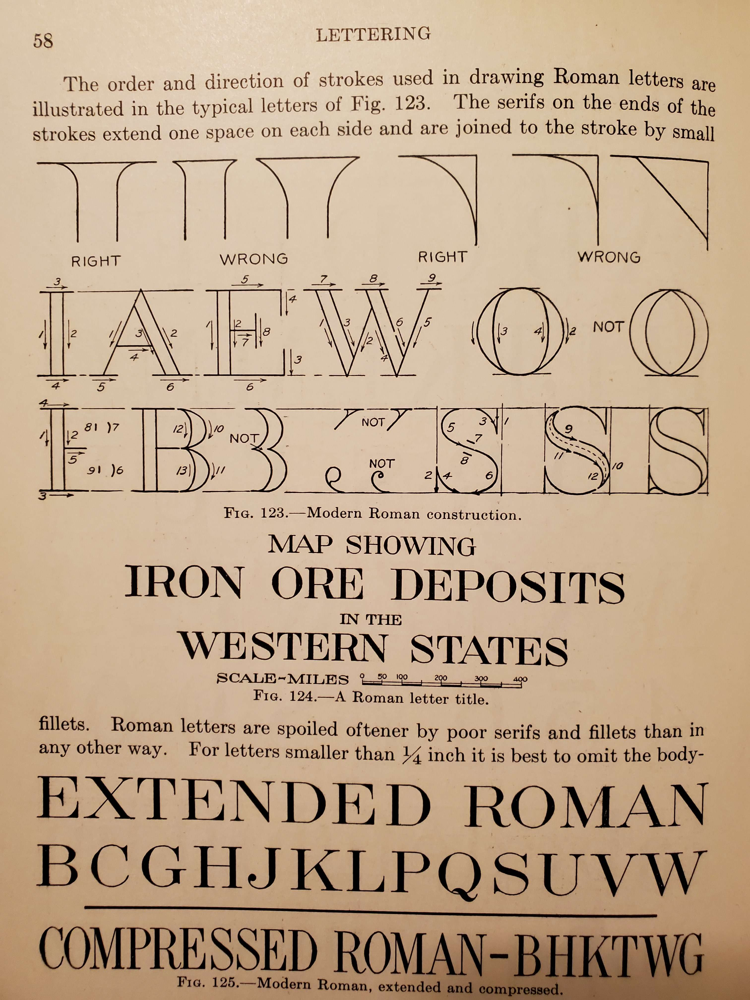

Ever wonder where the latin fonts come from? If you're like me the answer is no. Which is too bad; it's a surprisingly answerable question.
Even more answerable though, is where did the design of capital letters come from? The answer to this is so simple, I'm surprised I've never seen it occur in trivia.
The answer: The inscription on
Trajan's column.

The impetus to ask this question came from my grandfather's technical drafting book "Engineering Drawing" by Thomas French. Where, between French's illustrations of traditional lettering, French explained - "all our fonts are based on 'Old Roman' ".
But this article isn't about the history of fonts. It's about my attempts to understand a technique. A technique which, quietly, makes our lives a little bit better every day.
How do I make serifs?
My grandfather's old textbook found block lettering much more important to explain carefully. Leaving "Old Roman" to the cartographers. But, there was a paragraph's worth of clues:
We have something old and something new. The proportions from the block letters were kept. But there were at least two new major features, The directions of the stems were to have different thicknesses, and little plank things were added on all the horizontal and vertical lines.
The image suggested to me that the "right" curve was to be connected from these planks to the stems. At this point though, I'm stuck. What exactly makes this curve "right"? Is it Because it's "Old Roman"?
What follows are my various guesses at how to make Serifs. To my eyes, each of these techniques is beautiful and useful in its own way; the journey is more important than the right curve.
Guess one: Euclidean ideal Serifs
I started on this journey because I'm curious about traditional drafting. The tech art of yesterday.
You can only look at so many compass and straight edge constructions before you have the idea that a serif is just a corner of a circle.
It turns out the planks and the stem are enough data to specify a circle. You think of the stem as a tangent line to the circle, and the plank as a tangent line, starting at the circle.

From now on,
I'm going to refer the two ends of the plank, and the point of contact with
the stem, as
You can drag the control points in the above image!
Guess two: hand painted Serifs
Geometrically constructed fonts were popular for centuries. Perhaps The most notable examples are those by the famous artist Albrecht Dürer. It was commonly believed that this was the approach used by the Romans for the Trajan Column's Inscription.
It wasn't until the late 1960s that Edward M. Catich gave a compelling argument in his book "The Origin of the Serif" that they were simply painted by hand.
If you overlap the same letters, or interpoints on Trajan's Inscription you'll find they look different from each other in very human ways. Suggesting stencils, or careful constructions, weren't used.
For clear illustrations of this look up either Catich's text or Tufte's "Visual Explanations" on page 96.
For my purposes how it was done is less important than that it can be done this way. And we have contemporary examples of professionals that can paint Roman capitals with a broad side brush.
Notice how the artist makes the serifs much larger than the stems by rotating his brush as he transitions. You can still get a feel for how serifs transition into stems even without the ability to rotate a brush. Try painting the letter 'I' below in the paint program below it.
After trying quite a few times at this it's intuitive, that with practice, painting without constructions is practical.
Guess three: rotating the brush
Before I fully understood Catich's argument, I had a couple guesses over how exactly painting with the brush might work. In the previous guess, I wanted to make it clear that rotating the brush isn't essential to get a characteristic Serif shape.
Because, after watching the pro work, I glibly thought rotating the brush was required. I confused myself even more horribly though! My guess for how to rotate this brush was even backwards from the pro!
The following slider animation illustrates what I thought the surface of the brush was supposed to look like. I was very proud of myself, because the shape is pretty darn beautiful!
Here is one of my attempts to do this with a pencil sharpened to have a long tip of exposed graphite. I moved my pencil over the paper in the same manner as the above animation.

Those jumps in the lines of the animation aren't artificial, As one line gets close to vertical (or horizontal) the other end speeds up rapidly.
Guess four: Highschool doodles, or bezier Serifs
This guess is the reason why I decided to write up this article. Because I had discovered that by slightly modifying the previous brush rotating technique, then we get a quadratic bezier curves.
Instead of having a fixed width brush, and rotating it along the control points of the Serif. Let the width of the brush line change, and allow the ends to linearly interpolate between their respective extremes.
In high school, I would occasionally see students, bored with their lecture, doodle the following image in their note books.

Comparing these lines with the previous animation gave me a flash, of insight. I initially thought these were literally the same, they aren't; but they're analogous! Rather than keep the length of the brush constant, the sum of distances from the corner is constant instead.
What is true of both of them, is that you can imagine the "brush lines" moving through space, and this was enough for make me see that I was looking at the spine of De Casteljau's algorithm.
Freya has a wonderful discussion of Bezier curves broadly, with a particularly nice animation of De Casteljau's algorithm on Quadratic Bezier curves.
In the classic construction of De Casteljau's algorithm, you construct the curve by plotting the midpoint of the "brush line". But I had an idea - if I wanted to draw a bezier curve with the broad side of a long sharped pencil. I could fake shortening the pencil by overshooting the stem control points. The excess would be filled in by the stem anyway.

The serif that this would draw, would be the serif you'd obtain from the highschool doodle, if you drew so many lines you couldn't see the individual lines anymore. Is the curve of that serif really the same as the quadratic bezier curve given by De Casteljau's algorithm?
The answer is yes, for a beautifully simple reason. The "brush line" of De Casteljau's algorithm is the derivative of the bezier curve. And because the graph of quadratics are convex, any tangent line (or derivative line) must lie entirely one one side.
The tangent lines will never invade the region on the other side, of the bezier curve, and each one contains a point of the bezier curve, by definition of its construction.
I invite you to prove that the line between lines of De Casteljau's algorithm is indeed the derivative at the point it's constructing. It's a satisfyingly simple argument.
Below is what this serif would look like. This is perhaps the easiest serif to construct on a computer.
Final thoughts
None of the more technical constructions really match exactly how the Romans made their Serifs. However, in them I see a clear statement and identity. They embody the beauty of simple patterns.
Though even though mathematics is beautiful, it isn't the only beauty there is clearly room in these letters to express something more individual more subjective, and you see calligraphers do this all the time.
In either case, we have technology to support our choice - we have no limits here. I am happy to call any of the above techniques correct. I hope you enjoyed this journey as much as I did.